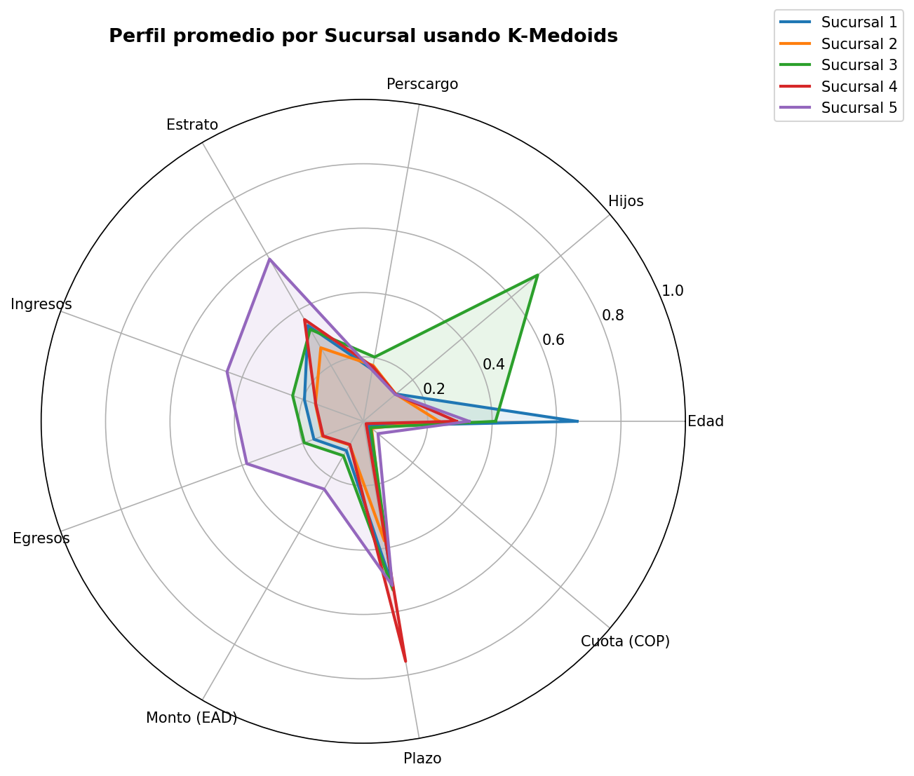

Este análisis tiene como objetivo segmentar a los solicitantes de crédito en cinco sucursales mediante el algoritmo K-Medoids, utilizando variables sociodemográficas y financieras. La finalidad es optimizar la operación de la entidad financiera, asignando clientes a sucursales con características homogéneas y facilitando la toma de decisiones en riesgo y colocación de crédito.

Clientes: 1518
Preaprobados: 643 (42.4%)
Prenegados: 875 (57.6%)
| Municipio | Clientes |
|---|---|
| Sabaneta | 605 |
| Caldas | 545 |
| Bello | 199 |
| Itagüí | 162 |
| Medellín | 4 |
| Envigado | 3 |
Clientes: 1664
Preaprobados: 571 (34.3%)
Prenegados: 1093 (65.7%)
| Municipio | Clientes |
|---|---|
| Caldas | 827 |
| Sabaneta | 668 |
| Bello | 80 |
| Itagüí | 58 |
| Envigado | 31 |
Clientes: 228
Preaprobados: 114 (50.0%)
Prenegados: 114 (50.0%)
| Municipio | Clientes |
|---|---|
| Sabaneta | 97 |
| Caldas | 69 |
| Bello | 36 |
| Itagüí | 15 |
| Medellín | 8 |
| Envigado | 3 |
Clientes: 989
Preaprobados: 330 (33.4%)
Prenegados: 659 (66.6%)
| Municipio | Clientes |
|---|---|
| Caldas | 437 |
| Sabaneta | 381 |
| Itagüí | 132 |
| Bello | 39 |
Clientes: 1443
Preaprobados: 1225 (84.9%)
Prenegados: 218 (15.1%)
| Municipio | Clientes |
|---|---|
| Bello | 693 |
| Medellín | 436 |
| Itagüí | 221 |
| Sabaneta | 53 |
| Envigado | 40 |
El proceso de segmentación permitió identificar diferencias claras entre los perfiles de los solicitantes de crédito, evidenciando una heterogeneidad significativa en términos de capacidad de pago y riesgo crediticio.
Se destaca la existencia de una sucursal con alta calidad crediticia, esta es la Sucursal 5, la cual presenta una tasa de preaprobación del 84.9%, lo que sugiere un segmento con alta capacidad financiera. En contraste, otras sucursales concentran clientes con mayor probabilidad de rechazo, lo que implica mayores niveles de riesgo para la entidad.
Adicionalmente, se identificaron patrones geográficos relevantes, donde ciertos municipios predominan en determinados clusters: mientras que Caldas y Sabaneta parecen predominar en las sucursales 1, 2 y 4, Bello y Medellín predominan en la sucursal 5, lo cual permite inferir comportamientos territoriales en la demanda de crédito.
Desde una perspectiva estratégica, los resultados respaldan la viabilidad de operar con cinco sucursales, siempre que estas sean gestionadas bajo enfoques diferenciados, alineados con el perfil de riesgo y características de los clientes asignados.
Como conclusión y sobre las **implicaciones de reducir a cinco sucursales, este proyecto se muestra viable**, solo es importante aclarar que deben existir estrategias diferenciadas, es decir, para la sucursal #5 se debe tener un enfoque más agresivo, que logre tener una mayor atracción comercial mediante la aprobación, y surte como un foco para el crecimiento de cartera, mientras que las sucursales #2 y #4 deben regirse por un enfoque más controlado con políticas más restrictivas o filtros más sofisticados.